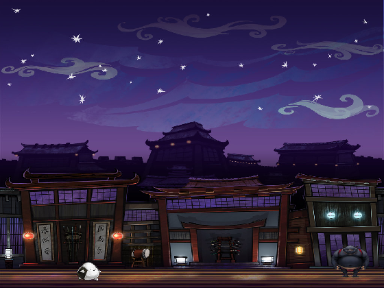
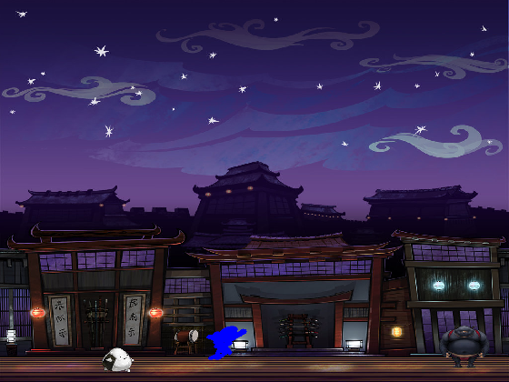
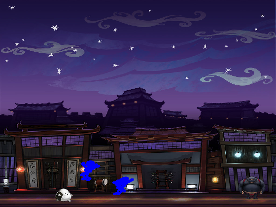
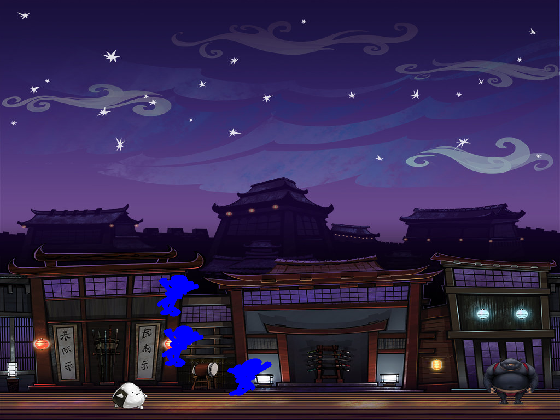
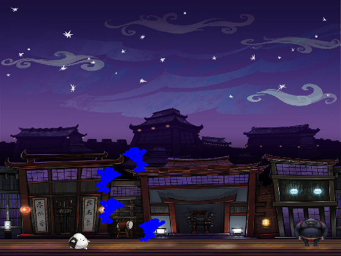

Contents
Play background music throughout all scenes.
[y,Fs] = audioread('ninja_music.wav');
player = audioplayer(y,Fs);
play(player)
Create background image
clf
ha = axes('units','normalized', 'position',[0 0 1 1]);
uistack(ha,'bottom');
I=imread('NinjaHome.jpg');
hi = imagesc(I);
colormap gray;
set(ha,'handlevisibility','off', 'visible','off')
filename = 'NinjaSword1.jpg';
ninjaColor =[0, 0, 1];
thresh = 219;
ninjasword1 = imread(filename);
ns1mtx = fJpeg2pointsConverter(ninjasword1, thresh);
[m,n]=size(ns1mtx);
fprintf("%s size (thresh=%i) , [%i,%i]",filename,thresh,m,n);
disp(m); disp(n);
ns1mtx = [ns1mtx;ones(1,n)];
S = [0.02 0 0; 0 0.02 0; 0 0 1];
ns1mtx = S*ns1mtx;
ns1mtx_orig = ns1mtx;
throwingStar = fJpeg2pointsConverter(imread("throwing-star.jpg"), thresh);
[m,n]=size(throwingStar);
throwingStar = [throwingStar;ones(1,n)];
throwingStar = S*throwingStar;
axesVisible = 'off';
axesXpos = 0;
axesYpos = 0;
axesXdim = 1.2;
axesYdim = 1;
NinjaSword1.jpg size (thresh=219) , [2,12878] 2
12878

Run towards the edge of the building (using shear)
ns1mtx = ShearHScene(ns1mtx,0.5);
hb = axes('units','normalized', 'position',[-0.2 .0625 axesXdim 1]);
r = 1/5;
numItr = 17.5;
for i=1:0.5:numItr
h_rr = plot(hb,ns1mtx(1,:), ns1mtx(2,:), '.', 'color', ninjaColor, 'MarkerSize', 1);
axis([0 70 0 70])
set(gca,'color','none','handlevisibility',axesVisible,'visible',axesVisible)
Shift = [1 0 1; 0 1 0; 0 0 1];
ns1mtx = Shift*ns1mtx;
ns1mtx = RotationScene(ns1mtx,r);
r = -1*r;
pause(0.1)
set(h_rr,'Visible','on')
axis([0 70 0 70])
set( gca, 'color','none','handlevisibility','off','visible','off')
end
ns1mtx = RotationScene(ns1mtx,r);

Reflect character and jump to left
ns1mtx = ShearHScene(ns1mtx,-0.5);
ns1mtx = ReflHScene(ns1mtx);
hb = axes('units','normalized', 'position',[-0.2 .0625 axesXdim 1]);
numItr = 12;
for i=1:numItr
h_rr = plot(hb,ns1mtx(1,:), ns1mtx(2,:), '.', 'color', ninjaColor, 'MarkerSize', 1);
axis([0 70 0 70])
set(gca,'color','none','handlevisibility',axesVisible,'visible',axesVisible)
Shift = [1 0 -(6/numItr); 0 1 (6/numItr); 0 0 1];
ns1mtx = Shift*ns1mtx;
pause(0.001)
set(h_rr,'Visible','on')
axis([0 70 0 70])
set( gca, 'color','none','handlevisibility','off','visible','off')
end

Character scales the building
hb = axes('units','normalized', 'position',[-0.2 .0625 axesXdim 1]);
r = 1/9;
for i=1:9
h_rr = plot(hb,ns1mtx(1,:), ns1mtx(2,:), '.', 'color', ninjaColor, 'MarkerSize', 1);
axis([0 70 0 70])
set(gca,'color','none','handlevisibility',axesVisible,'visible',axesVisible)
Shift = [1 0 0; 0 1 1; 0 0 1];
ns1mtx = Shift*ns1mtx;
ns1mtx = RotationScene(ns1mtx,r);
r = -1*r;
pause(0.2)
set(h_rr,'Visible','on')
axis([0 70 0 70])
set( gca, 'color','none','handlevisibility','off','visible','off')
end
ns1mtx = RotationScene(ns1mtx,r);

Reflect character and jump to right (to reach roof)
ns1mtx = ReflHScene(ns1mtx);
hb = axes('units','normalized', 'position',[-0.2 .0625 axesXdim 1]);
for i=1:numItr
h_rr = plot(hb,ns1mtx(1,:), ns1mtx(2,:), '.', 'color', ninjaColor, 'MarkerSize', 1);
axis([0 70 0 70])
set(gca,'color','none','handlevisibility',axesVisible,'visible',axesVisible)
Shift = [1 0 (5/numItr); 0 1 (5/numItr); 0 0 1];
ns1mtx = Shift*ns1mtx;
pause(0.001);
set(h_rr,'Visible','on');
axis([0 70 0 70]) ;
set( gca, 'color','none','handlevisibility','off','visible','off');;
end
characterCenter1 = centerPivot(ns1mtx);
x_final = characterCenter1(1,1);
y_final = characterCenter1(2,1);
fprintf("x_final = %f", x_final);
fprintf("y_final = %f", y_final);
x_final = 35.192720y_final = 22.381160

Lands on to roof
for i=1:5
hb = axes('units','normalized', 'position',[-0.2 .0625 1.2 1]);
h_rr = plot(hb,ns1mtx(1,:), ns1mtx(2,:), '.', 'color', ninjaColor, 'MarkerSize', 1);
axis([0 70 0 70]) ;
set(gca,'color','none','handlevisibility',axesVisible,'visible',axesVisible)
nS = [1 0 0.5 ; 0 1 -0.1; 0 0 1 ];
ns1mtx = nS*ns1mtx;
pause(0.05);
set(h_rr,'Visible','off');
axis([0 70 0 70]) ;
set( gca, 'color','none','handlevisibility','off','visible','off');
end

sneaks...
ns1mtx = squatScene(ns1mtx,1.8,0.6);
r=-1;
for i=1:28
hb = axes('units','normalized', 'position',[-0.2 .0625 1.2 1]);
h_rr = plot(hb,ns1mtx(1,:), ns1mtx(2,:), '.', 'color', ninjaColor, 'MarkerSize', 1);
axis([0 70 0 70]) ;
set(gca,'color','none','handlevisibility',axesVisible,'visible',axesVisible)
nS = [1 0 0.5 ; 0 1 0; 0 0 1 ];
ns1mtx = nS*ns1mtx;
ns1mtx = squatScene(ns1mtx, 1.0 + (0.2*r) , 1.0);
r=-1*r;
pause(0.05);
set(h_rr,'Visible','off');
axis([0 70 0 70]) ;
set( gca, 'color','none','handlevisibility','off','visible','off');
end

Character stands up from sneak position
algn = alignWith(ns1mtx, ns1mtx_orig);
ns1mtx = algn;
for i=1:4
hb = axes('units','normalized', 'position',[-0.2 .0625 1.2 1]);
h_rr = plot(hb,ns1mtx(1,:), ns1mtx(2,:), '.', 'color', ninjaColor, 'MarkerSize', 1);
axis([0 70 0 70]) ;
set(gca,'color','none','handlevisibility',axesVisible,'visible',axesVisible)
nS = [1 0 0.5 ; 0 1 0; 0 0 1 ];
ns1mtx = nS*ns1mtx;
pause(0.05);
set(h_rr,'Visible','off');
axis([0 70 0 70]) ;
set( gca, 'color','none','handlevisibility','off','visible','off');
end
nt4mtx = loadNinjaTool4('NinjaTool4.jpg');
Z = (-1)*centerPivot(nt4mtx);
nt4mtx = ShiftScene(nt4mtx, Z(1),Z(2));
nt4mtx = [-1 0 0; 0 -1 0; 0 0 1]*nt4mtx;
algn = alignWith(ns1mtx , nt4mtx);
nt4mtx = algn;
NinjaTool4.jpg size (thresh=219) , [2,14085] 2
14085
Frontflip
v=1;
for i=1:19
hb = axes('units','normalized', 'position',[-0.2 .0625 1.2 1]);
h_rr = plot(hb,nt4mtx(1,:), nt4mtx(2,:), '.', 'color', ninjaColor, 'MarkerSize', 1);
axis([0 70 0 70]) ;
set(gca,'color','none','handlevisibility',axesVisible,'visible',axesVisible)
nS = [1 0 0.4 ; 0 1 (-0.28)*v+3; 0 0 1 ];
nt4mtx = nS*nt4mtx;
nt4mtx = RotationScene(nt4mtx, -0.66 );
v=v+1;
pause(0.05);
set(h_rr,'Visible','off');
axis([0 70 0 70]) ;
set( gca, 'color','none','handlevisibility','off','visible','off');
end
Lands and walks on roof
algn = alignWith(nt4mtx , ns1mtx);
ns1mtx = algn;
for i=1:6
hb = axes('units','normalized', 'position',[-0.2 .0625 1.2 1]);
h_rr = plot(hb,ns1mtx(1,:), ns1mtx(2,:), '.', 'color', ninjaColor, 'MarkerSize', 1);
axis([0 70 0 70]) ;
set(gca,'color','none','handlevisibility',axesVisible,'visible',axesVisible)
nS = [1 0 0.5; 0 1 0; 0 0 1];
ns1mtx = nS*ns1mtx;
pause(0.05);
set(h_rr,'Visible','off');
axis([0 70 0 70]) ;
set( gca, 'color','none','handlevisibility','off','visible','off');
end
Jumps off roof to the edge of the screen
for i=1:5
hb = axes('units','normalized', 'position',[-0.2 .0625 1.2 1]);
h_rr = plot(hb,ns1mtx(1,:), ns1mtx(2,:), '.', 'color', ninjaColor, 'MarkerSize', 1);
axis([0 70 0 70]) ;
set(gca,'color','none','handlevisibility',axesVisible,'visible',axesVisible)
nS = [1 0 1.5 ; 0 1 1; 0 0 1 ];
ns1mtx = nS*ns1mtx;
pause(0.05);
set(h_rr,'Visible','off');
axis([0 70 0 70]) ;
set( gca, 'color','none','handlevisibility','off','visible','off');
end
characterCenter2 = centerPivot(ns1mtx);
x_final = characterCenter2(1,1);
y_final = characterCenter2(2,1);
fprintf("x_final = %f", x_final);
fprintf("y_final = %f", y_final);
x_final = 71.810776y_final = 30.271048
failureFlag = false;
[failureFlag, ns1mtx, characterCenter, throwingStar1, throwingStar2] = third_scene(ns1mtx, [x_final, y_final], throwingStar, throwingStar, ninjaColor, axesVisible);
x_final = characterCenter(1,:);
y_final = characterCenter(2,:);
stop(player)
disp('script completed');
function PPt = teleportTo(PP,tx,ty)
nc = centerPivot(PP);
nP = [1 0 -1*nc(1) ; 0 1 -1*nc(2); 0 0 1 ];
zPP = nP*PP;
nS = [1 0 tx ; 0 1 ty; 0 0 1 ];
PPt = nS*zPP;
end
function PPal = alignWith(PPprevmtx , newmtx )
[Mrows Ncols] = size(PPprevmtx);
center = feetPivot(newmtx);
newzzero = ShiftScene(newmtx, -1.0*center(1,1), -1.0*center(2,1));
prevc = feetPivot(PPprevmtx);
if Mrows == 3,PPal = newzzero + prevc;
else, PPal = newzzero + prevc(1:2 , :);
end
end
function PPq = squatScene(PP, xq, yq )
[Mrows Ncols] = size(PP);
if Mrows == 2, SH = [xq 0 ; 0 yq];
else , SH = [xq 0 0; 0 yq 0; 0 0 1];
end
center = feetPivot(PP);
PPz = ShiftScene(PP, -1.0*center(1,1), -1.0*center(2,1));
if Mrows == 3,PPq = (SH*PPz) + center;
else, PPq = (SH*PPz) + center(1:2 , :);
end
end
function nt4mtx = loadNinjaTool4(filename)
thresh = 219;
ninjatool4 = imread(filename);
nt4mtx = fJpeg2pointsConverter(ninjatool4, thresh);
[m,n]=size(nt4mtx);
fprintf("%s size (thresh=%i) , [%i,%i]",filename,thresh,m,n);
disp(m); disp(n);
nt4mtx = [nt4mtx;ones(1,n)];
S = [0.025 0 0; 0 0.025 0; 0 0 1];
nt4mtx = S*nt4mtx;
end
function fpiv = feetPivot(PP)
uX = max(PP(1,:));
lX = min(PP(1,:));
lY = min(PP(2,:));
fpiv = [ mean([uX,lX]) ; lY ; 0];
end
function PPshh = ShearHScene(PP,k)
[Mrows Ncols] = size(PP);
if Mrows == 2,
SH = [1 k ; 0 1];
else ,
SH = [1 k 0; 0 1 0; 0 0 1];
end
center = feetPivot(PP);
PPz = ShiftScene(PP, -1.0*center(1,1), -1.0*center(2,1));
if Mrows == 3,
PPshh = (SH*PPz) + center;
else ,
PPshh = (SH*PPz) + center(1:2 , :);
end
end
function cent = centerPivot(PP)
uX = max(PP(1,:));
lX = min(PP(1,:));
uY = max(PP(2,:));
lY = min(PP(2,:));
cent = [ mean([uX,lX]) ; mean([uY,lY]) ; 0];
end
function PPrs = RotationScene(PP,radAngle)
th=radAngle;
[Mrows Ncols] = size(PP);
if Mrows == 2 ,
R = [cos(th) -sin(th); sin(th) cos(th)];
else ,
R = [cos(th) -sin(th) 0; sin(th) cos(th) 0 ; 0 0 1];
end
center = centerPivot(PP);
PPz = ShiftScene(PP, -1.0*center(1,1), -1.0*center(2,1));
Prot = R*PPz;
PPrs = Prot + center;
end
function PPshsc = ShiftScene(PP,xD,yD)
Shift = [1 0 xD; 0 1 yD; 0 0 1];
[Mrows Ncols] = size(PP);
if Mrows == 2,
N1 = [PP(1,:) ; PP(2,:) ; ones(1,Ncols)];
else ,
N1 = PP;
end
shN1 = Shift*N1;
if Mrows == 2,
PPshsc = [shN1(1,:) ; shN1(2,:)];
else ,
PPshsc = shN1;
end
end
function PPrefl = ReflHScene(PP)
[Mrows Ncols] = size(PP);
if Mrows == 2,
RE = [-1 0 ; 0 1];
else ,
RE = [-1 0 0; 0 1 0; 0 0 1];
end
center = feetPivot(PP);
PPz = ShiftScene(PP, -1.0*center(1,1), -1.0*center(2,1));
if Mrows == 3,
PPrefl = (RE*PPz) + center;
else ,
PPrefl = (RE*PPz) + center(1:2 , :);
end
end
function PPout = fJpeg2pointsConverter(BB,THRESHOLD)
BB1=BB(:,:,1);
[M, N]= size(BB1);
BB1=double(BB1);
BB2 = 255-BB1;
BB3 = (BB2 > THRESHOLD);
PP=zeros(2,M*N);
cnt=0;
for ii=1:M,
for jj=1:N,
if (BB3(ii,jj)>0.5),
PP(:,cnt+1)=[jj;N-ii];
cnt=cnt+1;
end,
end,
end
PPout = PP(:,1:cnt);
end
script completed